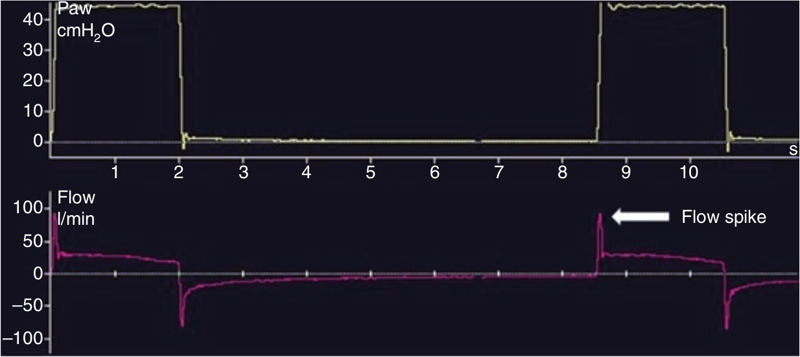

در بیماران COPD قسمت ابتدائی منحنی شدت جریان کاهی بصورت پرش کوتاه مدتی (spike) در می آید. این بیماران اغلب امپدانس سیستم تنفسی بالائی دارند (عموما مقاومت راه هوائی بالا و کمپلیانس زیادی دارند). در این حالت سیستم تنفسی به صورت یک مدل دو قسمتی عمل میکند. قسمت اول معرف کمپلیانس راه هوائی و لوله های ونتیلاتور است که بسرعت پر و سپس خالی میشود و قسمت دوم که معرف ریه ها است با سرعت کمتری تخلیه میشود. تحت این شرایط در هنگام دم منحنی شدت جریان یک افزایش جهشی اولیه پیدا میکند (به دلیل اینکه راه های هوائی با حجم کمی از گاز بسرع پر میشوند) و سپس بسرعت افت می نماید. با توجه به اینکه طی این مدت جهش اولیه، قسمت اول از مدل دوقسمتی (یعنی راه هوائی) فشار را به حد تنظیم شده رسانده، و قسمت دوم مدل فشار عقب زنی برای مقابله با فشار ونتیلاتور ایجاد نمی کند، نتیجه این میشود که مقدار شدت جریان کماکان پائین باقی می ماند.

منحنی شدت جریان در ابتدای دم در کدام حالت زیر جهش اولیه کوتاهی دارد؟
۱ - کاهش کمپلیانس
۲ - بیماری انسدادی شدید ریه
۳ - فشار بالای راه هوائی
۴ - اتساع مفرط دینامیک
۵ - کوتاه بودن مدت دم